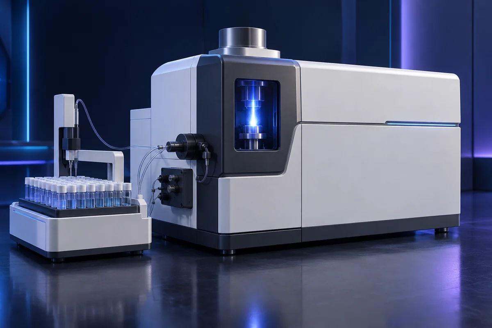
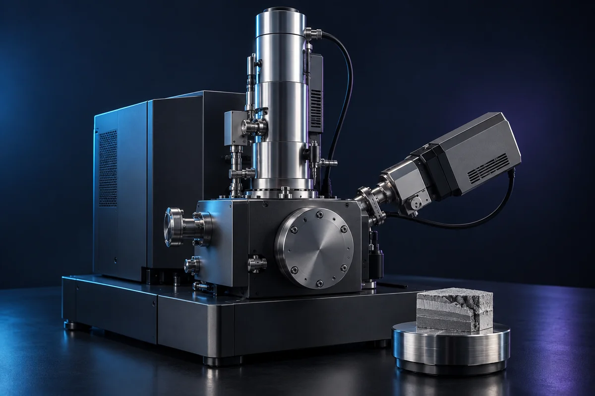

分析與量測
化學純度與元素分析
ICP-MS／ICP-QQQ、IC、TOC、滴定、pH／導電度、CVS／CPVS
查看詳細內容
XPS、SIMS、SEM-EDS、FIB、TEM／STEM、XRD、XRF／XRR、AFM、GDMS
確認分析深度、空間代表性、制樣污染、參考樣品與定量限制。
提供樣品結構、目標元素或缺陷、尺度和允許的制樣方式。
下載需求清單 ↓本資料庫介紹材料與技術應用，不代表特定品牌代理或現貨供應。型號、規格、供應及服務範圍依需求確認。
外部連結用於技術背景閱讀，不表示品牌代理或合作關係。